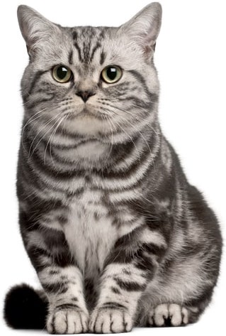
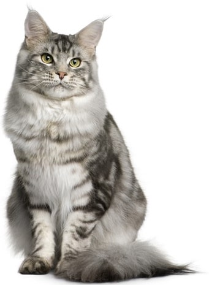
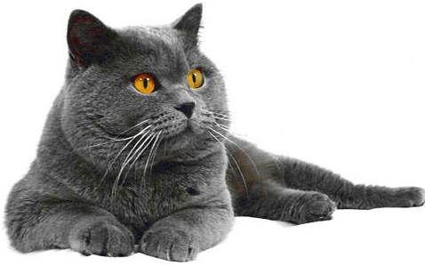
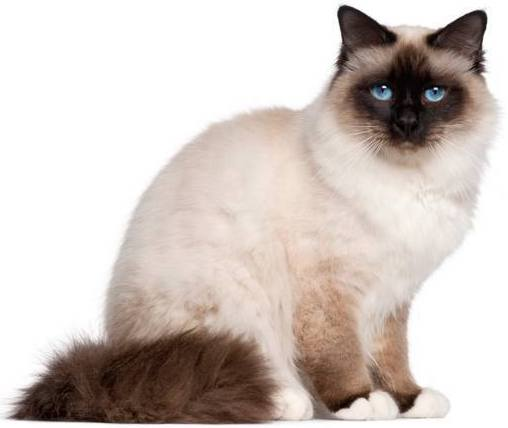
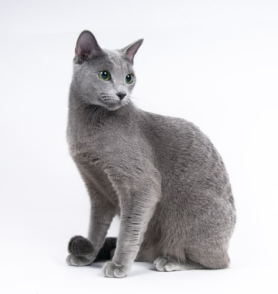
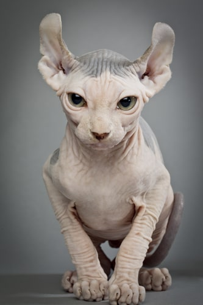
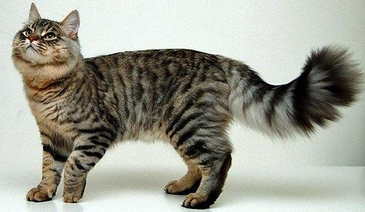
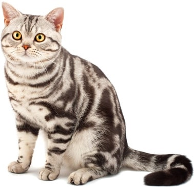
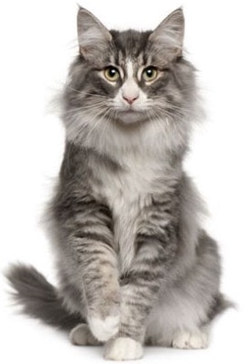

Британские короткошерстные кошки являются традиционной английской породой и гордостью Великобритании. Льюис Кэрролл в своей книге «Алиса в стране чудес» описал в образе всем известного Чеширского кота именно британскую короткошерстную породу.

Родиной породы кошек мейн-кун является США, это типичная и одна из самых старейших пород кошек Америки. Поначалу признавался лишь один окрас мейн-кунов – черный табби. Из-за своих крупных размеров, большого пушистого хвоста и окраса этих кошек считали похожими на енотов.

По стандарту существует целых 10 отличительных характеристик этой породы от британской короткошерстной кошки, но на практике выявить хотя бы три из них бывает трудно. И вся эта неразбериха наблюдается от того, что на протяжении долгого времени представителей этих двух пород относили к одной породе - британской короткошерстной.

История происхождения породы точно не известна и ее окутывают легенды. По одной из них, сама богиня Цуань Хуаньце помогла переселиться душе погибшего буддийского монаха в тело своего при жизни любимого кота и с тех пор глаза кота приобрели необыкновенный сапфировый цвет, шерсть на теле стала золотой, а кончики лап окрасились в белоснежный цвет.

История этой кошки начинается еще в VIII веке. Из-за великолепного красивого цвета мех русских голубых кошек северные народы использовали для пошива теплых перчаток и накидок. Но постепенно отношение изменилось к лучшему. Они стали домашними любимцами русского народа, по славянским традициям этим кошкам доверялось хранить сон младенцев, отгоняя от них злых духов. Лишь в 1901 году эта порода кошек получила официальное признание.

Кошки породы эльф немногочисленны, их разведением стали заниматься американские энтузиасты-заводчики в 90-х годах прошлого века. У них появилась идея создания новой бесшерстной породы кошек с загибающимися кончиками ушей. Добиться поставленных целей удалось только в 2006 году. В 2007 году данную породу разрешили регистрировать в TICA, но порода пока остается непризнанной.
Долгие годы бразильская короткошерстная кошка воспринималась как обычная, уличная и беспородная. На кошку не обращали никакого внимания, пока в 80-х годах прошлого века специалисты не заинтересовались этими кошками. Они установили, что эти кошки обладают уникальными характеристиками, отличающими их от остальных пород и обычной короткошерстной кошки.

Ген длинной шерсти стал результатом естественной мутации, спровоцированной холодными условиями жизни. Долгое пребывание в условиях снега и низких температур вызвало потребность в приспособлении животных к суровым условиям жизни, кошки, имеющие длинный и плотный мех, смогли выжить и дать рождение таким же длинношерстным потомкам.

Условия жизни закалили этих кошек, они обладали поистине великолепным здоровьем, прекрасно адаптировались к самым сложным условиям, имели мощное мускулистое тело, много сил и энергии для выживания в любых условиях.

Прародителями лесного норвежского кота являются длинношерстные коты, завезенные викингами из Турции. Под воздействие окружающей среды обитания в породе оставались наиболее сильные, выносливые, обладающие отличным здоровьем особи.